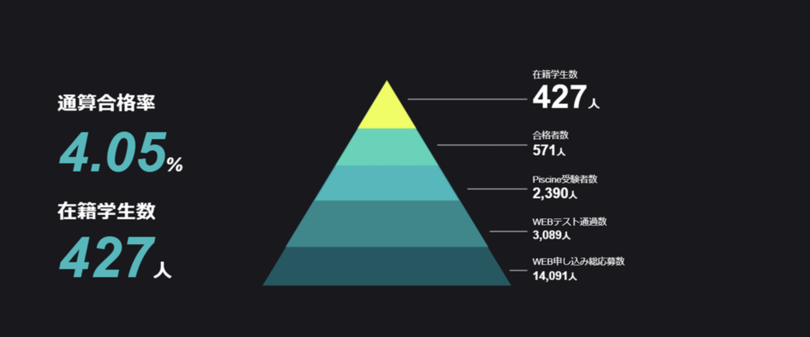
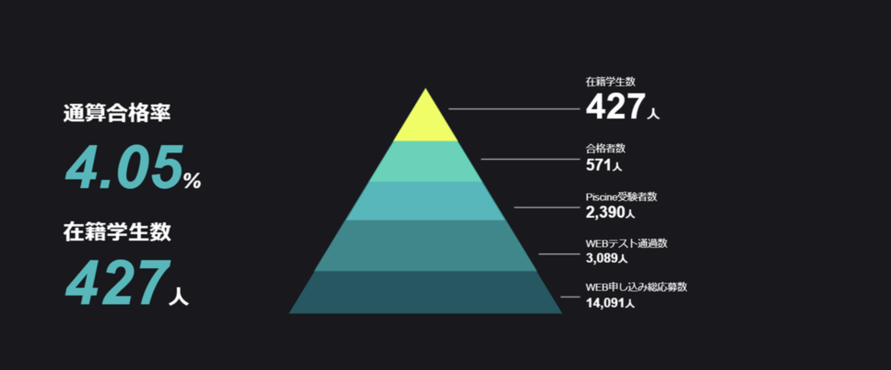

パリ発のプログラミング養成スクール42TOKYO、1次選考通過し、8/27よりPiscine参加決定！
おしらせ：6月29日
東京・六本木の住友不動産 六本木グランドタワーにキャンパスを構える「42TOKYO」の1次選考に通過しました。1次選考の通過率は2割弱（写真参照）そのため、08/30より1ヶ月間全ての時間をカリキュラムにかける予定です。
本カリキュラムを通して、「C言語」での開発環境等の勉強を重点的に実施する予定です。上記で身につけたスキルを貴社で発揮できるよう精進して参ります。

42 Tokyo（フォーティーツー）は、フランス発のエンジニア養成機関です。 「挑戦したいすべての人に質の高い教育を」を理念にシリコンバレーをはじめ、世界各国でエンジニア教育をおこなっています。 24時間利用可能な施設、学生同士で課題を克服するピアラーニング、学費完全無料など新しい仕組みで、社会で活躍するエンジニアを数多く輩出しています。
・開校 ：2020年6月22日
・本校住所 ：港区六本木3丁目２番１号住友不動産六本木グランドタワー24F
・授業料 ：無料
・応募条件 ：16歳以上（16歳～18歳未満はオンラインのみ）
・公式サイト：https://42tokyo.jp
・42 Tokyo 公式Twitterアカウント：https://twitter.com/42_tokyo
・42 Tokyo 公式YouTubeアカウント：
https://www.youtube.com/channel/UCS42F2BO1IYmvTcpcasxYLQ
・コンセプトムービー：https://youtu.be/eawhnhTO2oY
・カリキュラムについて：https://youtu.be/i9h8Jy8Zy0I
本カリキュラムを通して、「C言語」での開発環境等の勉強を重点的に実施する予定です。上記で身につけたスキルを貴社で発揮できるよう精進して参ります。

■そもそも42TOKYOとは？
42 Tokyo（フォーティーツー）は、フランス発のエンジニア養成機関です。 「挑戦したいすべての人に質の高い教育を」を理念にシリコンバレーをはじめ、世界各国でエンジニア教育をおこなっています。 24時間利用可能な施設、学生同士で課題を克服するピアラーニング、学費完全無料など新しい仕組みで、社会で活躍するエンジニアを数多く輩出しています。
■42 Tokyo概要
・開校 ：2020年6月22日
・本校住所 ：港区六本木3丁目２番１号住友不動産六本木グランドタワー24F
・授業料 ：無料
・応募条件 ：16歳以上（16歳～18歳未満はオンラインのみ）
・公式サイト：https://42tokyo.jp
・42 Tokyo 公式Twitterアカウント：https://twitter.com/42_tokyo
・42 Tokyo 公式YouTubeアカウント：
https://www.youtube.com/channel/UCS42F2BO1IYmvTcpcasxYLQ
・コンセプトムービー：https://youtu.be/eawhnhTO2oY
・カリキュラムについて：https://youtu.be/i9h8Jy8Zy0I